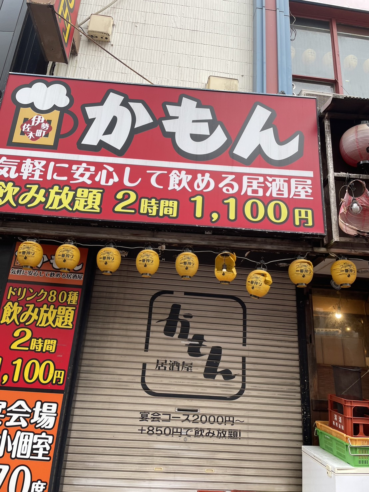
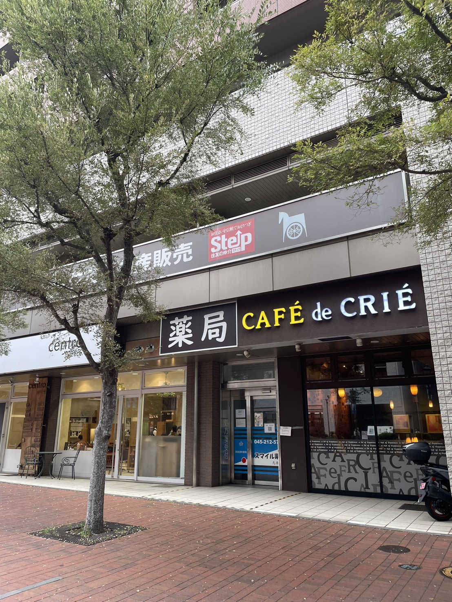

10/6

撮影場所・・・神奈川県 横浜市 伊勢佐木町
撮影日時・・・10/6
お昼ご飯を食べに歩いていたときに目に入った看板。中華料理屋のお店。
僕はまだ19歳でお酒は飲めないけど、なんとも餃子と酢豚で一杯、二杯と楽しみたくなってくるような良いリズム。
10/13

撮影場所・・・神奈川県 横浜市 伊勢佐木町
撮影日時・・・10/13
散歩している最中に目に入った看板。居酒屋の看板。
店名の「かもん」から、とても歓迎されている感じが漂っていて、足を運んでみたくなる魅力がある。
10/19

撮影場所・・・神奈川県 横浜市 桜木町
撮影日時・・・10/19
散歩している最中に目に入った看板。薬局とカフェが隣り合っていることで、薬局カフェのようになっている。